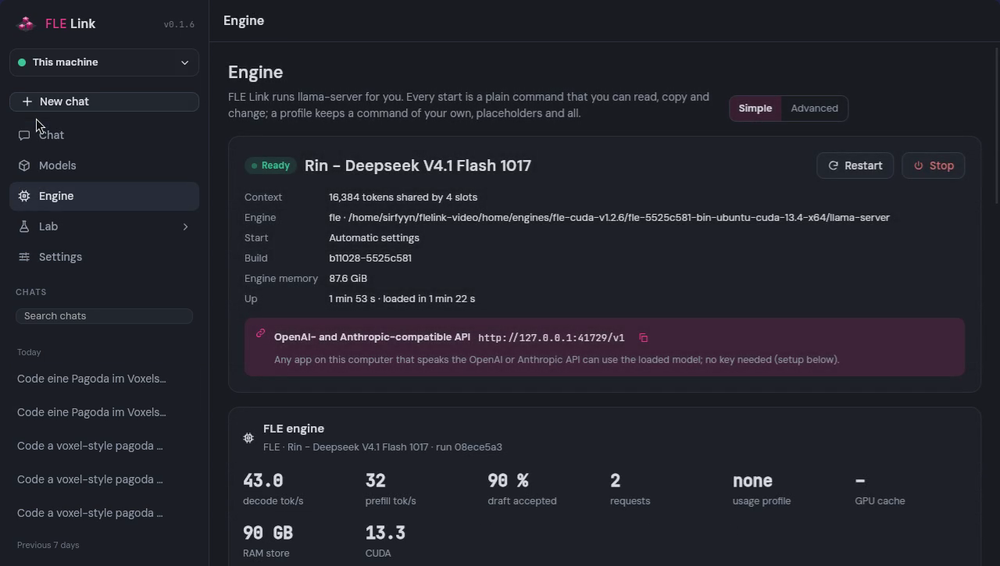

50tokens / second DeepSeek V4.1 Flash, 763B parameters 2-bit quant (ISTA GSQ-RCO IQ2_XXS) one 32 GB GPU
FLE Link installs the engine, fetches a model that fits your machine and serves an OpenAI- and Anthropic-compatible API. Nothing to configure.
curl -fsSL https://flelink.run/install.sh | sh
About the installer and the unsigned app
One file. No Python, no git, no sudo. Checked against its SHA-256 before it runs. It offers the desktop app too, or get the app directly: macOS · Windows · Linux. The app is not signed by Apple or Microsoft: downloaded in a browser, macOS asks once (right-click the app, Open) and Windows shows "More info, Run anyway". Through the installer neither asks.
50 tok/s
DeepSeek V4.1 Flash on one 32 GB GPU, same answer every run
66 s
from nothing to the first answer on Linux with an NVIDIA card
91 tok/s
a 125B MoE on one GPU, 2.5× plain llama.cpp
Best performance measured on Linux. The speed figures on this page were measured on Linux; macOS and Windows run the same recipes.
first run · M2 MacBook, 8 GB
$ flelink ask llama-3.2-1b "Name the capital of France in one word."
==> Engine: llama.cpp for Apple Silicon (Metal)
==> Installing the engine (checked against the SHA-256 GitHub publishes)
engine llama-b11540-bin-macos-arm64.tar.gz 100 %==> Downloading Llama 3.2 1B Instruct (Q4_K_M) (0.8 GiB)
model Llama-3.2-1B-Instruct-Q4_K_M.gguf 100 %
starting the engine ...
Ready: llama-3.2-1b on llama.cpp for Apple Silicon (Metal)
API: http://127.0.0.1:8080/v1 (OpenAI- and Anthropic-compatible, no key needed)
> Name the capital of France in one word.
Paris[2 tokens, 76.1 tok/s decode, 240 tok/s prompt]
Flagship models
Big mixture-of-experts models on one workstation
The FLE engine keeps the experts a token needs on the GPU and the rest in RAM. FLE Link picks the build and the settings for your machine.
Decode, median over six tasks, same machine and model: one 32 GB RTX PRO 4500, 120 GB RAM, 16 cores, Linux (6 Oct 2026). Smaller than Unsloth's IQ4_XS at the same KL divergence to BF16. Prefill (reading long prompts) was where FLE trailed in this run; it has been reworked since, and new numbers follow when they are measured the same way.
50 tok/s with the DSpark draft model, lossless: the same answer every run (FLE v1.2.5, three runs: 49.8, 50.8, 50.6)
One 32 GB GPU RTX PRO 4500, 120 GB RAM, Ryzen 9 9950X3D, Linux. Experts a usage profile picks most sit on the card, a 90 GB expert store in RAM holds the rest. Through FLE Link the same recipe gives 49.9 tok/s (median of three, 5 Nov 2026)
One commandflelink run deepseek-v41-ista-dspark installs the FLE engine, fetches the model and the draft, and uses copies already on your disk
Without the draftdeepseek-v41-ista: exact, 37.6 tok/s started by hand, 37.2 through FLE Link
Rinrin-deepseek-v41-dspark: a split 2-bit build of the same model, hot experts resident on the GPU. About +6 % speed for a bit more error: 53.4 tok/s, KL divergence 0.29 against the original (ISTA IQ2_XXS: 0.25). Model card
Same as by hand through FLE Link the engine runs the recipe's own command: started by hand or through FLE Link, the same answer token for token
Where it sits
The layer between the engine and your tools
Inference engines are fast and bare: you pick the build, the flags, the context, the cache. Chat apps, editors and agents just want an endpoint. FLE Link does the part in between, and the engine underneath can be swapped.
Your tools
Chat page
Editor
Agent
Any OpenAI client
/v1
FLE Link
reads the machine
checks fit before downloading
installs and verifies the engine
picks the start settings
supervises and restarts
shows what the engine does
llama-server
Engine
FLE expert offloading for big MoE modelsllama.cpp the upstream build, as fallbackYour build any llama-server compatible binary
How it works
Three steps, each one you can read
It reads the machine
CPU, memory, GPU and free disk, and which engine build fits.
$ flelink system
OS macos arm64
CPU Apple M2 (8 cores)
Memory 8.0 GiB
GPU usable 5.3 GiB
Engines that fit (best first):
llama.cpp for Apple Silicon (Metal)
It checks fit before downloading
No 80 GB download that ends in an out-of-memory error. And a model you already have, in the Hugging Face cache, LM Studio or Ollama, is found, checked by its SHA-256 and used instead of downloaded again.
$ flelink models
llama-3.2-1b 0.8 GiB fits
llama-3.2-1b-q8 1.2 GiB fits
fle-iq3-m 82.8 GiB too big
It serves, and shows the command
Every start is a plain llama-server command you can copy and run without FLE Link.
flelink full screen: pick a model, watch it load, chat.
Studio in the browser
flelink studio chat with live speed, models, engine log, profiles and MCP tools.
Desktop app
The Studio in a window. Quitting stops the model. Download

API
flelink connect OpenAI- and Anthropic-compatible; prints the settings for Claude Code, Codex, OpenCode and pi.
$ flelink connect claude
export ANTHROPIC_BASE_URL=http://127.0.0.1:8642
export ANTHROPIC_MODEL=<the model it found>
claude
In the Studio
Measure it, tune it, build your own
Speed test The same requests every time, compared with your last run of the same setting.
Practical testflelink bench --task pagoda: a real three.js answer of up to 8000 tokens at temperature 0, through any /v1, with a check that it is complete and the machine in the result file, so two people can compare.
Best for my machine A tuner that keeps a change only when it is faster with a 95 % interval that excludes zero.
A/B/A Two settings compared with a drift check, so a machine that warms up does not decide.
Quality next to speed KL divergence against the reference and a knowledge probe, right after a speed test.
Expert cache Hit rate over time and per layer, read from the FLE engine.
Forge Build your own quant: whole expert layers from other quants, the best mix for your size budget, expert pruning, a KL check, and a recipe others can rebuild.
Live preview HTML and SVG from an answer run right under the code, sandboxed, with no access to the Studio.
Tools MCP servers, local or remote with sign-in, as chat tools that ask before each call.
Recipes Model, engine and settings in one small file to share; plugins add engines and recipes as files.
Coding agents
Your coding agent, on your own model
The engine answers the OpenAI API and the Anthropic API on one address, so Claude Code, Codex, OpenCode and pi talk to the local model in the format they already speak. flelink connect finds the loaded model and prints the setting for each of them; the Engine page shows the same with a copy button.
And the agent can run FLE Link itself: flelink mcp is an MCP server that lists what fits the machine, downloads and loads a model, stops it, reads the engine log, changes settings and tests the model with one prompt.
$ flelink connect claude
Found: http://127.0.0.1:8642 (model Qwen3.8-Flash-Next)
Claude Code run in the terminal
export ANTHROPIC_BASE_URL=http://127.0.0.1:8642
export ANTHROPIC_AUTH_TOKEN=flelink
export ANTHROPIC_MODEL=Qwen3.8-Flash-Next
claude
$ claude mcp add flelink -- flelink mcp
Agent · FLE Durable
An agent that keeps running next to your model
The Agent page starts FLE Durable with the model you run: a local agent that is always on and works from events instead of waiting for you to type. You plan things on its agenda (once, daily, on certain days, every few minutes), it plans its own follow-ups, and any tool can hand it an event by webhook.
Every event lands in one durable queue before the agent sees it, so a crash or a reboot neither loses one nor runs one twice. Only destructive steps wait for your approval; everything else it simply does. Open source, Apache-2.0, built on pi-durable.
$ git clone https://github.com/sirfyyn/fle-durable
$ cd fle-durable && npm ci --ignore-scripts
Agent → Set up → Start
$ curl -X POST http://127.0.0.1:8642/api/p/agent/events \
-H 'X-Agent-Key: …' \
-d '{"id":"ci-42","text":"Build 42 failed on main"}'
{"ok":true,"id":"webhook:ci-42","queued":true}
Host mode
Run it on the GPU box, use it from the laptop
flelink studio --host 0.0.0.0 opens the Studio to your network. Other machines sign in with an access key, over https with a certificate of its own whose fingerprint is printed at start.
Or pair two FLE Links: the GPU box shows a code (flelink pair-code), the laptop enters it and works with the big machine's models. Rights per device, revocable any time, by address or through an SSH tunnel.
$ flelink studio --host 0.0.0.0
FLE Link is open to the network. Access key:
4-yB…Tc
FLE Link 0.1.7 — https://127.0.0.1:8642/
Other machines: https://192.168.1.20:8642/
Certificate fingerprint (SHA-256): 9f3c…
Tested by breaking it
What happens when things go wrong
Every command runs in the test suite twice: once as intended, once with something broken on purpose. The tests run on macOS, Linux and Windows.
Download killed halfway The next start resumes where it stopped and checks the hash.
No network A clear message in under a second, no hang.
Broken model file Cut off, empty or random bytes: refused with a reason.
Engine crashes The status says so, the API answers 503, a restart works.
Program stopped Ctrl+C or a signal ends the engine with it; after a crash the engine left behind is stopped before a second one loads.
Port taken The next free port, and it tells you which.
Wrong key on the network Refused, and every wrong guess waits a second.
Bad requests Broken JSON, huge bodies, path tricks: all refused, the server keeps running.
Roadmap
Open, and built to be changed
MIT licensed. The engine sits behind an adapter, so a new engine is a new adapter, not a fork.
0.1
Now one command from nothing to an answer, any GGUF from Hugging Face with a fit check, models you already have, Studio, desktop app, host mode and remote access, OpenAI and Anthropic API with flelink connect for coding agents, an MCP server so agents run FLE Link, engine adapters for FLE, llama.cpp and your own build, recipes and plugins as files, the Forge for your own quants
next
More engines adapters for vLLM and ik_llama.cpp
later
Training LoRA adapters on your own data
Questions
Before you install
Does anything leave my computer?
No. FLE Link only connects to GitHub (to fetch the engine and its checksums) and Hugging Face (when you download a model). Nothing is sent to us, there is no account and no telemetry.
Which models work?
The built-in catalog shows what fits your machine. Any GGUF file works with flelink run /path/to/model.gguf. The FLE engine is made for large mixture-of-experts models on small GPUs, see FastLocalExperts.
macOS says the app is from an unidentified developer
The builds are not signed, to keep the project free of yearly fees. Right-click the app, choose Open, then confirm once. The command-line install is checked against its SHA-256 instead.
Windows SmartScreen warns about it
Same reason, the build is unsigned. Choose More info, then Run anyway.
Can I use my own llama.cpp build?
Yes. Point FLE Link at any llama-server compatible binary; it reads --help to see what the build can do.